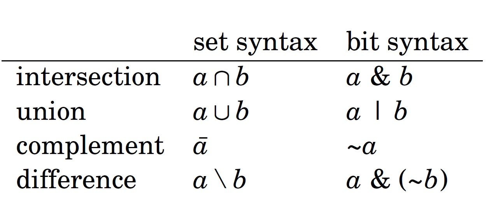

Representing Sets
Every subset of a set {0,1,2,...,n‒1} can be represented as an n bit integer whose
one bits indicate which elements belong to the subset. This is an efficient way to
represent sets, because every element requires only one bit of memory, and set
operations can be implemented as bit operations.
For example, since int is a 32-bit type, an int number can represent any
subset of the set {0,1,2,...,31}. The bit representation of the set {1,3,4,8} is
00000000000000000000000100011010
which corresponds to the number 28 + 24 + 23 + 21 = 282.
Set implementation
int x = 0;
x |= (1<<1);
x |= (1<<3);
x |= (1<<4);
x |= (1<<8);
cout << x << __builtin_popcount(x) << "\n" ; // 4
Then, the following code prints all elements that belong to the set:
x |= (1<<1);
x |= (1<<3);
x |= (1<<4);
x |= (1<<8);
cout << x << __builtin_popcount(x) << "\n" ; // 4
for(int i = 0; i < 32; i++) {
if (x&(1<<i)) cout << i << " ";
}
// output: 1 3 4 8
if (x&(1<<i)) cout << i << " ";
}
// output: 1 3 4 8
Set operations
Set operations can be implemented as follows as bit operations:

For example, the following code first constructs the sets x = {1,3,4,8} and
y = {3,6,8,9}, and then constructs the set z = x∪y = {1,3,4,6,8,9}:
int x = (1<<1) + (1<<3) + (1<<4) + (1<<8);
int y = (1<<3) + (1<<6) + (1<<8) + (1<<9);
int z = x|y;
cout << __builtin_popcount(z) << "\n" ; // 6
int y = (1<<3) + (1<<6) + (1<<8) + (1<<9);
int z = x|y;
cout << __builtin_popcount(z) << "\n" ; // 6
Iterating through subsets
The following code goes through the subsets of {0,1,...,n‒1}:
for(int b = 0; b < (1<<n); b++) {
// process subset b
}
// process subset b
}
The following code goes through the subsets with exactly k elements:
for(int b = 0; b < (1<<n); b++) {
if(__builtin_popcount(b) == k) {
// process subset b
}
}
if(__builtin_popcount(b) == k) {
// process subset b
}
}
The following code goes through the subsets of a set x:
int b = 0;
do {
// process subset b
} while (b=(b-x)&x);
do {
// process subset b
} while (b=(b-x)&x);